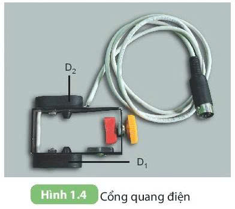
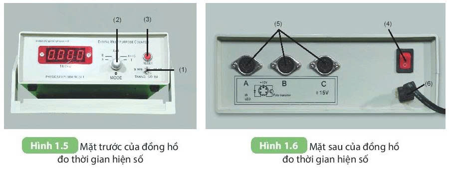

I. Phương pháp tìm hiểu tự nhiên
Phương pháp tìm hiểu tự nhiên là cách thức tìm hiểu các sự vật, hiện tượng trong tự nhiên và đời sống, chứng minh các vấn đề bằng các dẫn chứng khoa học.
Các bước thực hiện
- Bước 1: Đề xuất vấn đề cần tìm hiểu.
- Bước 2: Đưa ra dự đoán khoa học.
- Bước 3: Lập kế hoạch kiểm tra dự đoán.
- Bước 4: Thực hiện kế hoạch kiểm tra dự đoán.
- Bước 5: Viết báo cáo, thảo luận và trình bày báo cáo.
Ví dụ
Nghiên cứu sự hòa tan của muối ăn, đường và đá vôi trong nước. Chuẩn bị dụng cụ, tiến hành thí nghiệm, quan sát kết quả và rút ra kết luận.
II. Một số kĩ năng tiến trình học tập môn KHTN
1. Kĩ năng quan sát và phân loại
Sử dụng một hoặc nhiều giác quan để thu nhận thông tin về các sự vật, hiện tượng trong tự nhiên và phân loại chúng theo những đặc điểm chung.
2. Kĩ năng liên kết
Sử dụng các số liệu quan sát, kết quả phân tích hoặc những điều đã biết để xác định mối liên hệ giữa các sự vật và hiện tượng.
3. Kĩ năng đo
Biết chức năng, giới hạn đo và độ chính xác của các dụng cụ đo để lựa chọn và sử dụng phù hợp trong thí nghiệm.
4. Kĩ năng dự báo
- Dự báo định tính: Dựa vào hiểu biết và suy luận.
- Dự báo định lượng: Dựa trên số liệu và mô hình tính toán.
III. Sử dụng các dụng cụ đo trong môn KHTN 7
1. Cổng quang điện
Cổng quang điện là thiết bị có vai trò như công tắc điều khiển việc mở hoặc đóng đồng hồ đo thời gian hiện số.
Thiết bị gồm bộ phát tia hồng ngoại, bộ thu tia hồng ngoại và dây cáp nối với đồng hồ.

2. Đồng hồ đo thời gian hiện số
Đồng hồ đo thời gian hiện số hoạt động giống đồng hồ bấm giây nhưng được điều khiển bằng cổng quang điện.
- THANG ĐO: Chọn giới hạn đo và độ chia nhỏ nhất.
- MODE: Chọn chế độ làm việc.
- RESET: Đưa đồng hồ về trạng thái ban đầu.
- Công tắc điện.
- Ổ cắm cổng quang A, B, C.
- Ổ cắm nguồn điện.

IV. Báo cáo thực hành
1. Viết báo cáo thực hành
Sau khi thực hành cần ghi lại mục đích, dụng cụ, cách tiến hành, kết quả và kết luận của thí nghiệm.
2. Viết và trình bày báo cáo, thuyết trình
- Chuẩn bị nội dung báo cáo và tư liệu cần thiết.
- Phân công công việc rõ ràng khi làm việc nhóm.
- Sử dụng hình ảnh, biểu bảng hoặc video để tăng tính trực quan.
- Trình bày kết quả một cách rõ ràng và khoa học.
Nội dung chính của một báo cáo:
- Mục đích báo cáo.
- Chuẩn bị và các bước tiến hành.
- Kết quả và thảo luận.
- Kết luận.